MAXimal
добавлено: 16 Jan 2009 0:58
редактировано: 16 Jan 2009 10:04
Содержание [скрыть]
Дискретное извлечение корня
Задача дискретного извлечения корня (по аналогии с задачей дискретного логарифма) звучит следующим образом. По данным  ( — простое),
( — простое),  ,
,  требуется найти все
требуется найти все  , удовлетворяющие условию:
, удовлетворяющие условию:
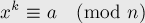
Алгоритм решения
Решать задачу будем сведением её к задаче дискретного логарифма.
Для этого применим понятие Первообразного корня по модулю . Пусть 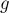 — первообразный корень по модулю (т.к. — простое, то он существует). Найти его мы можем, как описано в соответствующей статье, за 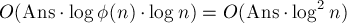 плюс время факторизации числа  .
.
Отбросим сразу случай, когда 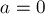 — в этом случае сразу находим ответ 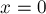.
Поскольку в данном случае ( — простое) любое число от  до
до  представимо в виде степени первообразного корня, то задачу дискретного корня мы можем представить в виде:
представимо в виде степени первообразного корня, то задачу дискретного корня мы можем представить в виде:
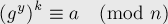
где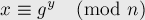
Тривиальным преобразованием получаем: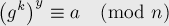
Здесь искомой величиной является , таким образом, мы пришли к задаче дискретного логарифмирования в чистом виде. Эту задачу можно решить алгоритмом baby-step-giant-step Шэнкса за 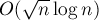, т.е. найти одно из решений 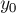 этого уравнения (или обнаружить, что это уравнение решений не имеет).
, таким образом, мы пришли к задаче дискретного логарифмирования в чистом виде. Эту задачу можно решить алгоритмом baby-step-giant-step Шэнкса за 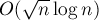, т.е. найти одно из решений 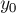 этого уравнения (или обнаружить, что это уравнение решений не имеет).Пусть мы нашли некоторое решение этого уравнения, тогда одним из решений задачи дискретного корня будет 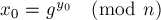.
Нахождение всех решений, зная одно из них
Чтобы полностью решить поставленную задачу, надо научиться по одному найденному находить все остальные решения.
Для этого вспомним такой факт, что первообразный корень всегда имеет порядок (см. статью о первообразном корне), т.е. наименьшей степенью , дающей единицу, является . Поэтому добавление в показатель степени слагаемого с ничего не меняет:
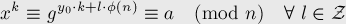
Отсюда все решения имеют вид: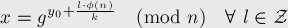
где выбирается таким образом, чтобы дробь 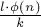 была целой. Чтобы эта дробь была целой, числитель должен быть кратен наименьшему общему кратному и , откуда (вспоминая, что наименьшее общее кратное двух чисел 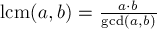), получаем: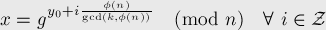
Это окончательная удобная формула, которая даёт общий вид всех решений задачи дискретного корня.Реализация
Приведём полную реализацию, включающую нахождение первообразного корня, дискретное логарифмирование и нахождение и вывод всех решений.
int gcd (int a, int b) { return a ? gcd (b%a, a) : b; } int powmod (int a, int b, int p) { int res = 1; while (b) if (b & 1) res = int (res * 1ll * a % p), --b; else a = int (a * 1ll * a % p), b >>= 1; return res; } int generator (int p) { vector<int> fact; int phi = p-1, n = phi; for (int i=2; i*i<=n; ++i) if (n % i == 0) { fact.push_back (i); while (n % i == 0) n /= i; } if (n > 1) fact.push_back (n); for (int res=2; res<=p; ++res) { bool ok = true; for (size_t i=0; i<fact.size() && ok; ++i) ok &= powmod (res, phi / fact[i], p) != 1; if (ok) return res; } return -1; } int main() { int n, k, a; cin >> n >> k >> a; if (a == 0) { puts ("1\n0"); return 0; } int g = generator (n); int sq = (int) sqrt (n + .0) + 1; vector < pair<int,int> > dec (sq); for (int i=1; i<=sq; ++i) dec[i-1] = make_pair (powmod (g, int (i * sq * 1ll * k % (n - 1)), n), i); sort (dec.begin(), dec.end()); int any_ans = -1; for (int i=0; i<sq; ++i) { int my = int (powmod (g, int (i * 1ll * k % (n - 1)), n) * 1ll * a % n); vector < pair<int,int> >::iterator it = lower_bound (dec.begin(), dec.end(), make_pair (my, 0)); if (it != dec.end() && it->first == my) { any_ans = it->second * sq - i; break; } } if (any_ans == -1) { puts ("0"); return 0; } int delta = (n-1) / gcd (k, n-1); vector<int> ans; for (int cur=any_ans%delta; cur<n-1; cur+=delta) ans.push_back (powmod (g, cur, n)); sort (ans.begin(), ans.end()); printf ("%d\n", ans.size()); for (size_t i=0; i<ans.size(); ++i) printf ("%d ", ans[i]); }